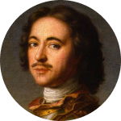
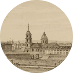
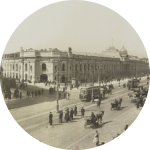
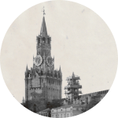
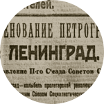
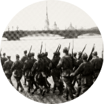
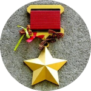

История
-

16 (27 по новому стилю) мая 1703 года
Основание Санкт-
Петербурга Петром I -

21 мая 1712 года
Санкт-Петербург становится официальной столицей России
-

1914 год
Переименование
в Петроград -

1918 год
Перенос столицы из
Петрограда в Москву -

26 января 1924 года
Переименование Петрограда
в Ленинград в честь В.И. Ленина -

8 сентября 1941
— 27 января 1944 ггБлокада Ленинграда, начатая войсками Финляндии и Германии
-

8 мая 1965 года
Присвоение городу Ленинграду звания Города-героя. Ленинград — город-герой
-
6 сентября 1991 года
Возвращение городу прежнего названия Санкт-Петербург, о чём был подписан Указ Президиума Верховного Совета РСФСР
-

22 сентября 2012 года
Рождение 5-ти миллионного жителя Санкт-Петербурга